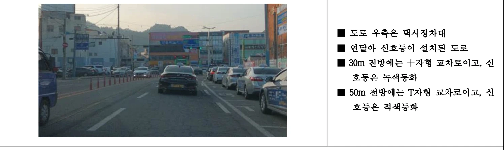

682. Which of the following are incorrect ways to drive in the given situation? (Select TWO)

- ①Accelerate as much as possible to pass through the intersection before the traffic light changes.
- ②Continue driving in the first lane to turn right at the 4-way intersection.
- ③You can go straight or turn right at the green traffic light.
- ④You should stop your car before the stop line at the red traffic light.
- ⑤After stopping before the stop line, you can turn right at the red traffic light.
Show answer
Answer
① Accelerate as much as possible to pass through the intersection before the traffic light changes.
② Continue driving in the first lane to turn right at the 4-way intersection.
Reference
There is a high possibility that there will be taxi passengers getting on and off the taxi or pedestrians trying to jaywalk near the taxi stop, so it is safe to drive at a reduced speed while looking around. When drivers of all vehicles wish to turn right at an intersection, they must first turn right while driving slowly along the right edge of the road (Road Traffic Act, Article 25, Paragraph 1).
Reference text is a machine translation for study.